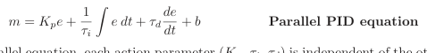
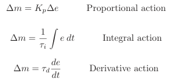
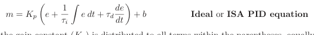
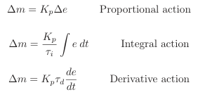
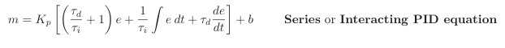
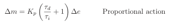
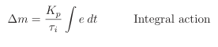
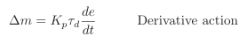
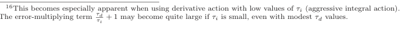

The original, as published: Tony R. Kuphaldt, Lessons In Industrial Instrumentation, Different PID equations. CC BY 4.0, https://creativecommons.org/licenses/by/4.0/. Imported as published, from https://www.ibiblio.org/kuphaldt/socratic/sinst/book/liii.pdf https://www.ibiblio.org/kuphaldt/socratic/sinst/book/liii.pdf
For better or worse, there are no fewer than three different forms of PID equations implemented in modern PID controllers: the parallel, ideal, and series. Some controllers offer the choice of more than one equation, while others implement just one. It should be noted that more variations of PID equation exist than these three, but that these are the three major variations.
The equation used to describe PID control so far in this chapter is the simplest form, sometimes called the parallel equation, because each action (P, I, and D) occurs in separate terms of the equation, with the combined effect being a simple sum:

In the parallel equation, each action parameter (Kp, τi, τd) is independent of the others. At first, this may seem to be an advantage, for it means each adjustment made to the controller should only affect one aspect of its action. However, there are times when it is better to have the gain parameter affect all three control actions (P, I, and D)15. We may show the independence of the three actions mathematically, by breaking the equation up into three different parts, each one describing its contribution to the output (∆m):

As you can see, the three portions of this PID equation are completely separate, with each tuning parameter (Kp, τi, and τd) acting independently within its own term of the equation.
15An example of a case where it is better for gain (Kp) to influence all three control modes is when a technician re-ranges a transmitter to have a larger or smaller span than before, and must re-tune the controller to maintain the same loop gain as before. If the controller’s PID equation takes the parallel form, the technician must adjust the P, I, and D tuning parameters proportionately. If the controller’s PID equation uses Kp as a factor in all three modes, the technician need only adjust Kp to re-stabilize the loop.
An alternate version of the PID equation designed such that the gain (Kp) affects all three actions is called the Ideal or ISA equation:

Here, the gain constant (Kp) is distributed to all terms within the parentheses, equally affecting all three control actions. Increasing Kp in this style of PID controller makes the P, the I, and the D actions equally more aggressive. We may show this mathematically, by breaking the “ideal” equation up into three different parts, each one describing its contribution to the output (∆m):

As you can see, all three portions of this PID equation are influenced by the gain (Kp) owing to algebraic distribution, but the integral and derivative tuning parameters (τi and τd) act independently within their own terms of the equation.
A third version, with origins in the peculiarities of pneumatic controller mechanisms and analog electronic circuits, is called the Series or Interacting equation:

Here, the gain constant (Kp) affects all three actions (P, I, and D) just as with the “ideal” equation. The difference, though, is the fact that both the integral and derivative constants have an effect on proportional action as well! That is to say, adjusting either τi or τd does not merely adjust those actions, but also influences the aggressiveness of proportional action16. We may show this mathematically, by breaking the “series” equation up into three different parts, each one describing its contribution to the output (∆m):



As you can see, all three portions of this PID equation are influenced by the gain (Kp) owing to algebraic distribution. However, the proportional term is also affected by the values of the integral and derivative tuning parameters (τi and τd). Therefore, adjusting τi affects both the I and P actions, adjusting τd affects both the D and P actions, and adjusting Kp affects all three actions. This “interacting” equation is an artifact of certain pneumatic and electronic controller designs. Back when these were the dominant technologies, and PID controllers were modularly designed such that integral and derivative actions were separate hardware modules included in a controller at additional cost beyond proportional-only action, the easiest way to implement the integral and derivative actions was in a way that just happened to have an interactive effect on controller gain. In other words, this odd equation form was a sort of compromise made for the purpose of simplifying the physical design of the controller. Interestingly enough, many digital PID controllers are programmed to implement the “interacting” PID equation even though it is no longer an artifact of controller hardware. The rationale for this programming is to have the digital controller behave identically to the legacy analog electronic or pneumatic controller it is replacing. This way, the proven tuning parameters of the old controller may be plugged into the new digital controller, yielding the same results. In essence, this is a form of “backward compatibility” between digital PID control and analog (electronic or pneumatic) PID control.
